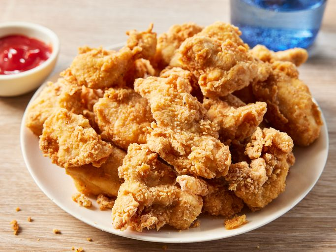

Nuggets poulets

Voici la recette de nuggets poulets.
Ingrédients
- 1 kg de poulet
- 200 g de chapelure
- 2 œufs
- Sel et poivre
- Huile pour friture
Instructions
- Coupez le poulet en morceaux.
- Battez les œufs dans un bol.
-
Panez les morceaux de poulet dans les œufs puis dans la chapelure.
- Faites chauffer l'huile dans une poêle.
- Faites frire les nuggets jusqu'à ce qu'ils soient dorés.
- Égouttez sur du papier absorbant.
- Servez chaud avec une sauce de votre choix.
Temps de préparation
Préparation : 15 minutes
Cuisson : 10 minutes
Temps total
Temps total : 25 minutes
Portions
4 portions
Conseils
Vous pouvez ajouter des épices à la chapelure pour plus de saveur.
Variantes
Essayez avec du poisson ou des légumes pour une version végétarienne.
Home